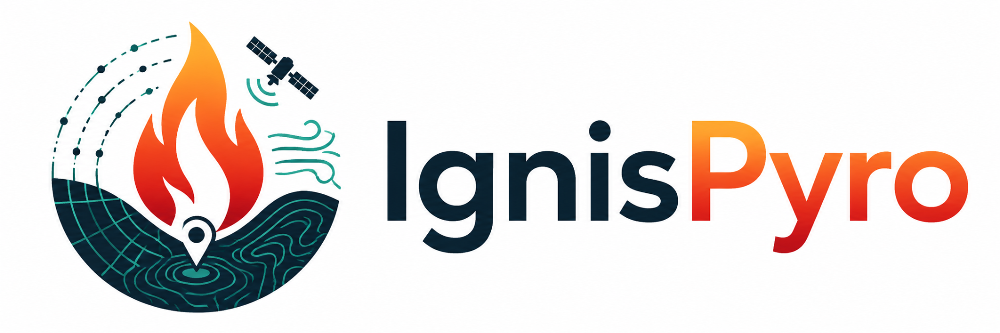

FirePotential
3D
POLÍGONOS · ALINHAMENTOS · CONECTIVIDADE
PROTÓTIPO EXPERIMENTAL
SERRA DA ESTRELA
TORRE
Vista 2D
↓ GeoJSON
▱
MAPA BASE
OpenStreetMap
⌄
© CIGeoE · Carta Itinerária 1:500 000
O terreno, à sua maneira
Escolha o fundo do mapa · relevo 3D mantido
Topográfico
Curvas e relevo
✓
OpenStreetMap
Estradas e lugares
✓
Híbrido
Satélite e nomes
✓
Satélite
Imagem sem nomes
✓
Topográfico Esri
Referência mundial
✓
Cinza claro
Fundo discreto
✓
Carta militar
CIGeoE · 1:500 000
✓
O mapa base não altera os cálculos CPS ou WindNinja.
Alinhamento CPS
1/3
2/3
3/3
0/3
Alinhamento ≠ probabilidade de arder
Vento · km/h →
0–5
5–10
10–20
20–30
30–40
40–60
≥60
Ligações
Vento →
Números
RELEVO REAL · CENÁRIO EXPLORATÓRIO